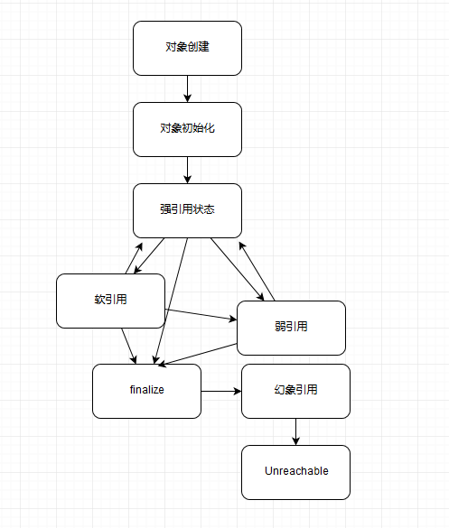
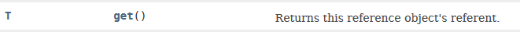

- 00 开篇词 以面试题为切入点，有效提升你的Java内功.md
- 01 谈谈你对Java平台的理解？.md
- 02 Exception和Error有什么区别？.md
- 03 谈谈final、finally、 finalize有什么不同？.md
- 04 强引用、软引用、弱引用、幻象引用有什么区别？.md
- 05 String、StringBuffer、StringBuilder有什么区别？.md
- 06 动态代理是基于什么原理？.md
- 07 int和Integer有什么区别？.md
- 08 对比Vector、ArrayList、LinkedList有何区别？.md
- 09 对比Hashtable、HashMap、TreeMap有什么不同？.md
- 10 如何保证集合是线程安全的_ ConcurrentHashMap如何实现高效地线程安全？.md
- 11 Java提供了哪些IO方式？ NIO如何实现多路复用？.md
- 12 Java有几种文件拷贝方式？哪一种最高效？.md
- 13 谈谈接口和抽象类有什么区别？.md
- 14 谈谈你知道的设计模式？.md
- 15 synchronized和ReentrantLock有什么区别呢？.md
- 16 synchronized底层如何实现？什么是锁的升级、降级？.md
- 17 一个线程两次调用start()方法会出现什么情况？.md
- 18 什么情况下Java程序会产生死锁？如何定位、修复？.md
- 19 Java并发包提供了哪些并发工具类？.md
- 20 并发包中的ConcurrentLinkedQueue和LinkedBlockingQueue有什么区别？.md
- 21 Java并发类库提供的线程池有哪几种？ 分别有什么特点？.md
- 22 AtomicInteger底层实现原理是什么？如何在自己的产品代码中应用CAS操作？.md
- 23 请介绍类加载过程，什么是双亲委派模型？.md
- 24 有哪些方法可以在运行时动态生成一个Java类？.md
- 25 谈谈JVM内存区域的划分，哪些区域可能发生OutOfMemoryError_.md
- 26 如何监控和诊断JVM堆内和堆外内存使用？.md
- 27 Java常见的垃圾收集器有哪些？.md
- 28 谈谈你的GC调优思路_.md
- 29 Java内存模型中的happen-before是什么？.md
- 30 Java程序运行在Docker等容器环境有哪些新问题？.md
- 31 你了解Java应用开发中的注入攻击吗？.md
- 32 如何写出安全的Java代码？.md
- 33 后台服务出现明显“变慢”，谈谈你的诊断思路？.md
- 34 有人说“Lambda能让Java程序慢30倍”，你怎么看？.md
- 35 JVM优化Java代码时都做了什么？.md
- 36 谈谈MySQL支持的事务隔离级别，以及悲观锁和乐观锁的原理和应用场景？.md
- 37 谈谈Spring Bean的生命周期和作用域？.md
- 38 对比Java标准NIO类库，你知道Netty是如何实现更高性能的吗？.md
- 39 谈谈常用的分布式ID的设计方案？Snowflake是否受冬令时切换影响？.md
- 周末福利 谈谈我对Java学习和面试的看法.md
- 结束语 技术没有终点.md
04 强引用、软引用、弱引用、幻象引用有什么区别？
在Java语言中，除了原始数据类型的变量，其他所有都是所谓的引用类型，指向各种不同的对象，理解引用对于掌握Java对象生命周期和JVM内部相关机制非常有帮助。
今天我要问你的问题是，强引用、软引用、弱引用、幻象引用有什么区别？具体使用场景是什么？
典型回答
不同的引用类型，主要体现的是对象不同的可达性（reachable）状态和对垃圾收集的影响。
所谓强引用（“Strong” Reference），就是我们最常见的普通对象引用，只要还有强引用指向一个对象，就能表明对象还“活着”，垃圾收集器不会碰这种对象。对于一个普通的对象，如果没有其他的引用关系，只要超过了引用的作用域或者显式地将相应（强）引用赋值为null，就是可以被垃圾收集的了，当然具体回收时机还是要看垃圾收集策略。
软引用（SoftReference），是一种相对强引用弱化一些的引用，可以让对象豁免一些垃圾收集，只有当JVM认为内存不足时，才会去试图回收软引用指向的对象。JVM会确保在抛出OutOfMemoryError之前，清理软引用指向的对象。软引用通常用来实现内存敏感的缓存，如果还有空闲内存，就可以暂时保留缓存，当内存不足时清理掉，这样就保证了使用缓存的同时，不会耗尽内存。
弱引用（WeakReference）并不能使对象豁免垃圾收集，仅仅是提供一种访问在弱引用状态下对象的途径。这就可以用来构建一种没有特定约束的关系，比如，维护一种非强制性的映射关系，如果试图获取时对象还在，就使用它，否则重现实例化。它同样是很多缓存实现的选择。
对于幻象引用，有时候也翻译成虚引用，你不能通过它访问对象。幻象引用仅仅是提供了一种确保对象被finalize以后，做某些事情的机制，比如，通常用来做所谓的Post-Mortem清理机制，我在专栏上一讲中介绍的Java平台自身Cleaner机制等，也有人利用幻象引用监控对象的创建和销毁。
考点分析
这道面试题，属于既偏门又非常高频的一道题目。说它偏门，是因为在大多数应用开发中，很少直接操作各种不同引用，虽然我们使用的类库、框架可能利用了其机制。它被频繁问到，是因为这是一个综合性的题目，既考察了我们对基础概念的理解，也考察了对底层对象生命周期、垃圾收集机制等的掌握。
充分理解这些引用，对于我们设计可靠的缓存等框架，或者诊断应用OOM等问题，会很有帮助。比如，诊断MySQL connector-j驱动在特定模式下（useCompression=true）的内存泄漏问题，就需要我们理解怎么排查幻象引用的堆积问题。
知识扩展
- 对象可达性状态流转分析
首先，请你看下面流程图，我这里简单总结了对象生命周期和不同可达性状态，以及不同状态可能的改变关系，可能未必100%严谨，来阐述下可达性的变化。

我来解释一下上图的具体状态，这是Java定义的不同可达性级别（reachability level），具体如下：
-
强可达（Strongly Reachable），就是当一个对象可以有一个或多个线程可以不通过各种引用访问到的情况。比如，我们新创建一个对象，那么创建它的线程对它就是强可达。
-
软可达（Softly Reachable），就是当我们只能通过软引用才能访问到对象的状态。
-
弱可达（Weakly Reachable），类似前面提到的，就是无法通过强引用或者软引用访问，只能通过弱引用访问时的状态。这是十分临近finalize状态的时机，当弱引用被清除的时候，就符合finalize的条件了。
-
幻象可达（Phantom Reachable），上面流程图已经很直观了，就是没有强、软、弱引用关联，并且finalize过了，只有幻象引用指向这个对象的时候。
-
当然，还有一个最后的状态，就是不可达（unreachable），意味着对象可以被清除了。
判断对象可达性，是JVM垃圾收集器决定如何处理对象的一部分考虑。
所有引用类型，都是抽象类java.lang.ref.Reference的子类，你可能注意到它提供了get()方法：

除了幻象引用（因为get永远返回null），如果对象还没有被销毁，都可以通过get方法获取原有对象。这意味着，利用软引用和弱引用，我们可以将访问到的对象，重新指向强引用，也就是人为的改变了对象的可达性状态！这也是为什么我在上面图里有些地方画了双向箭头。
所以，对于软引用、弱引用之类，垃圾收集器可能会存在二次确认的问题，以保证处于弱引用状态的对象，没有改变为强引用。
但是，你觉得这里有没有可能出现什么问题呢？
不错，如果我们错误的保持了强引用（比如，赋值给了static变量），那么对象可能就没有机会变回类似弱引用的可达性状态了，就会产生内存泄漏。所以，检查弱引用指向对象是否被垃圾收集，也是诊断是否有特定内存泄漏的一个思路，如果我们的框架使用到弱引用又怀疑有内存泄漏，就可以从这个角度检查。
- 引用队列（ReferenceQueue）使用
谈到各种引用的编程，就必然要提到引用队列。我们在创建各种引用并关联到相应对象时，可以选择是否需要关联引用队列，JVM会在特定时机将引用enqueue到队列里，我们可以从队列里获取引用（remove方法在这里实际是有获取的意思）进行相关后续逻辑。尤其是幻象引用，get方法只返回null，如果再不指定引用队列，基本就没有意义了。看看下面的示例代码。利用引用队列，我们可以在对象处于相应状态时（对于幻象引用，就是前面说的被finalize了，处于幻象可达状态），执行后期处理逻辑。
Object counter = new Object();
ReferenceQueue refQueue = new ReferenceQueue<>();
PhantomReference<Object> p = new PhantomReference<>(counter, refQueue);
counter = null;
System.gc();
try {
// Remove是一个阻塞方法，可以指定timeout，或者选择一直阻塞
Reference<Object> ref = refQueue.remove(1000L);
if (ref != null) {
// do something
}
} catch (InterruptedException e) {
// Handle it
}
- 显式地影响软引用垃圾收集
前面泛泛提到了引用对垃圾收集的影响，尤其是软引用，到底JVM内部是怎么处理它的，其实并不是非常明确。那么我们能不能使用什么方法来影响软引用的垃圾收集呢？
答案是有的。软引用通常会在最后一次引用后，还能保持一段时间，默认值是根据堆剩余空间计算的（以M bytes为单位）。从Java 1.3.1开始，提供了-XX:SoftRefLRUPolicyMSPerMB参数，我们可以以毫秒（milliseconds）为单位设置。比如，下面这个示例就是设置为3秒（3000毫秒）。
-XX:SoftRefLRUPolicyMSPerMB=3000
这个剩余空间，其实会受不同JVM模式影响，对于Client模式，比如通常的Windows 32 bit JDK，剩余空间是计算当前堆里空闲的大小，所以更加倾向于回收；而对于server模式JVM，则是根据-Xmx指定的最大值来计算。
本质上，这个行为还是个黑盒，取决于JVM实现，即使是上面提到的参数，在新版的JDK上也未必有效，另外Client模式的JDK已经逐步退出历史舞台。所以在我们应用时，可以参考类似设置，但不要过于依赖它。
- 诊断JVM引用情况
如果你怀疑应用存在引用（或finalize）导致的回收问题，可以有很多工具或者选项可供选择，比如HotSpot JVM自身便提供了明确的选项（PrintReferenceGC）去获取相关信息，我指定了下面选项去使用JDK 8运行一个样例应用：
-XX:+PrintGCDetails -XX:+PrintGCTimeStamps -XX:+PrintReferenceGC
这是JDK 8使用ParrallelGC收集的垃圾收集日志，各种引用数量非常清晰。
0.403: [GC (Allocation Failure) 0.871: [SoftReference, 0 refs, 0.0000393 secs]0.871: [WeakReference, 8 refs, 0.0000138 secs]0.871: [FinalReference, 4 refs, 0.0000094 secs]0.871: [PhantomReference, 0 refs, 0 refs, 0.0000085 secs]0.871: [JNI Weak Reference, 0.0000071 secs][PSYoungGen: 76272K->10720K(141824K)] 128286K->128422K(316928K), 0.4683919 secs] [Times: user=1.17 sys=0.03, real=0.47 secs]
注意：JDK 9对JVM和垃圾收集日志进行了广泛的重构，类似PrintGCTimeStamps和PrintReferenceGC已经不再存在，我在专栏后面的垃圾收集主题里会更加系统的阐述。
- Reachability Fence
除了我前面介绍的几种基本引用类型，我们也可以通过底层API来达到强引用的效果，这就是所谓的设置reachability fence。
为什么需要这种机制呢？考虑一下这样的场景，按照Java语言规范，如果一个对象没有指向强引用，就符合垃圾收集的标准，有些时候，对象本身并没有强引用，但是也许它的部分属性还在被使用，这样就导致诡异的问题，所以我们需要一个方法，在没有强引用情况下，通知JVM对象是在被使用的。说起来有点绕，我们来看看Java 9中提供的案例。
class Resource {
private static ExternalResource[] externalResourceArray = ...
int myIndex; Resource(...) {
myIndex = ...
externalResourceArray[myIndex] = ...;
...
}
protected void finalize() {
externalResourceArray[myIndex] = null;
...
}
public void action() {
try {
// 需要被保护的代码
int i = myIndex;
Resource.update(externalResourceArray[i]);
} finally {
// 调用reachbilityFence，明确保障对象strongly reachable
Reference.reachabilityFence(this);
}
}
private static void update(ExternalResource ext) {
ext.status = ...;
}
}
方法action的执行，依赖于对象的部分属性，所以被特定保护了起来。否则，如果我们在代码中像下面这样调用，那么就可能会出现困扰，因为没有强引用指向我们创建出来的Resource对象，JVM对它进行finalize操作是完全合法的。
new Resource().action()
类似的书写结构，在异步编程中似乎是很普遍的，因为异步编程中往往不会用传统的“执行->返回->使用”的结构。
在Java 9之前，实现类似功能相对比较繁琐，有的时候需要采取一些比较隐晦的小技巧。幸好，java.lang.ref.Reference给我们提供了新方法，它是JEP 193: Variable Handles的一部分，将Java平台底层的一些能力暴露出来：
static void reachabilityFence(Object ref)
在JDK源码中，reachabilityFence大多使用在Executors或者类似新的HTTP/2客户端代码中，大部分都是异步调用的情况。编程中，可以按照上面这个例子，将需要reachability保障的代码段利用try-finally包围起来，在finally里明确声明对象强可达。
今天，我总结了Java语言提供的几种引用类型、相应可达状态以及对于JVM工作的意义，并分析了引用队列使用的一些实际情况，最后介绍了在新的编程模式下，如何利用API去保障对象不被意外回收，希望对你有所帮助。
一课一练
关于今天我们讨论的题目你做到心中有数了吗？给你留一道练习题，你能从自己的产品或者第三方类库中找到使用各种引用的案例吗？它们都试图解决什么问题？
请你在留言区写写你的答案，我会选出经过认真思考的留言，送给你一份学习鼓励金，欢迎你与我一起讨论。
你的朋友是不是也在准备面试呢？你可以“请朋友读”，把今天的题目分享出去，或许你能帮到他。
© 2019 - 2023 Liangliang Lee. Powered by Vert.x and hexo-theme-book.